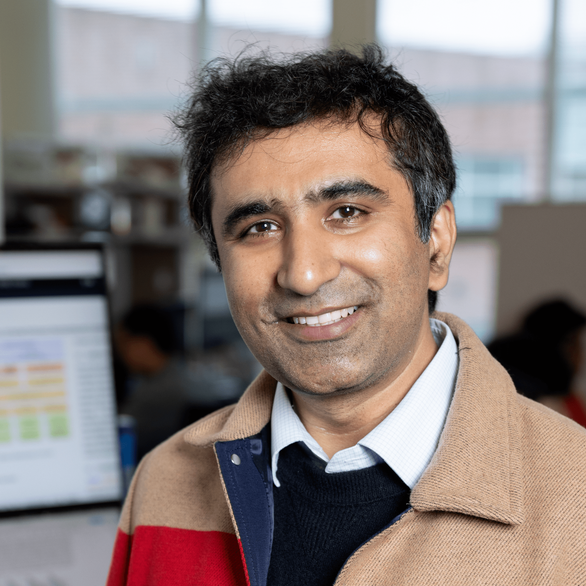

V-RAIC: Verified Reconfigurable AI Computing
DAC'27 @ San Jose
Abstract: The rapid proliferation of AI workloads across devices with vastly different computational capabilities has created an ecosystem of irregular and dynamic runtime demands. No single dataflow or layout can optimally serve all workloads, motivating years of research into reconfigurable accelerators that can flexibly adapt their dataflow and layout to the workload’s needs. However, despite significant academic progress, no publicly available reconfigurable accelerator platform currently exists for the community to learn from or build upon.
This tutorial fills that gap by offering the first hands-on experience in learning, simulating, verifying, and deploying a reconfigurable accelerator, from hardware to compiler co-design and formal verification. Participants will gain practical knowledge across four pillars:
- Pillar 1 – Hardware (FEATHER): We introduce FEATHER, a state-of-the-art reconfigurable accelerator architecture that enables low-cost switching between dataflows and layouts, efficiently supporting diverse workload patterns. The tutorial provides RTL simulation guidance and hands-on exercises to explore how FEATHER achieves this flexibility.
- Pillar 2 – Accelerator Design Language (ALLO): To enable scalable accelerator generation, we present ALLO, an Accelerator Design Language that allows participants to generate FEATHER variants of different scales with only minor frontend program modifications. This facilitates rapid scaling and evolution of the accelerator for various device classes and feature extensions.
- Pillar 3 – Compiler Infrastructure (ACT): Distinct workloads demand specialized dataflow and layout mappings for optimal performance. We introduce ACT, an ecosystem that automatically generates software tools like compilers for the ALLO-generated FEATHER accelerator. The generated compiler explores the large space of dataflow and layout mappings to identify the most latency-efficient configurations for workloads.
- Pillar 4 – Generalized Quick Error Detection (G-QED): Every dataflow, layout, and ALLO-generated FEATHER variant must be functionally correct. We present G-QED (Generalized Quick Error Detection), a formal pre-silicon verification technique that needs only the accelerator's ISA from ACT, with no hand-written properties or golden models. The tutorial demonstrates how G-QED found a FEATHER corner-case bug and how its setup is reused across ALLO-generated variants.
By the end of the tutorial, participants will understand how to compile diverse workloads, generate scalable accelerators, simulate performance via deployable RTL models, formally verify their functional correctness, and tune the system for real-world deployment scenarios, empowering the DAC community to advance the next generation of reconfigurable AI accelerators.
This tutorial connects multiple disjointed tutorials that were individually offered previously into a coherent application. Among them, ALLO has been held seven times on ASPLOS’26, C4ML workshop @ CGO'25, FPGA'25, PLDI'24, FCCM'24, UW SAMPL, UIUC AMD-Xilinx Center of Excellence (HACC) with tens of attendees each. ACT tutorials have been organized at SPLASH’25, MICRO’25, ASPLOS’26, and PLDI’26. Georgia Tech has organized AI accelerator tutorials at ASPLOS’18, HPCA’19, ISCA’21, ASPLOS’21, ASPLOS’22, ASPLOS’23, ASPLOS’26.
V-RAIC Resources
ACT Ecosystem
Ecosystem that automatically generates software tools like compilers for the ALLO-generated FEATHER accelerator.
FEATHER
Reconfigurable accelerator architecture enabling low-cost switching between dataflows and layouts.
Allo
Hardware compiler and accelerator design language for scalable accelerator generation.
G-QED Paper (DAC'23)
Generalized Quick Error Detection for formal pre-silicon verification of accelerators.
QED and Symbolic QED Monograph
Foundations and Trends, 2024.
G-QED Tutorial Slides
G-QED for Pre-Silicon Verification — DVCon Europe 2024.
List of Topics
Introduction to reconfigurable AI Computing
- Flexible Dataflow Demand
- Flexible Layout Demand
- Various Deployment Scenarios
FEATHER – Reconfigurable AI Accelerator
- Introduction to the FEATHER microarchitecture (15 min)
- Introduction to the FEATHER ISA (5 min)
- Hands-on: RTL simulation for various layout choices
- Hands-on: RTL simulation for various dataflow choices
- Hands-on: Analytic Performance Estimation and standalone layout search
Allo – Python-embedded Accelerator Design Language (ADL)
- Introduction Talk (20 min)
- Hands-on: Distribute credentials and set up the JupyterHub environment
- Hands-on: Automated FEATHER generation via ALLO ADL
- Hands-on: Configuration tuning of Allo-FEATHER
ACT Ecosystem – Automatically generating software support for accelerators
- Talk: Introduction to ACT Ecosystem (20 min)
- Hands-on: Quick tutorial on TAIDL (ACT’s ISA specification language) (10 min)
- Hands-on: Writing FEATHER ISA in TAIDL and generating its compiler (10 min)
- Hands-on: Compilation using the generated FEATHER compiler (10 min)
G-QED – Generalized Quick Error Detection
- Talk: Why reconfigurable accelerators are hard to verify; G-QED functional consistency from the command view; soundness and completeness up to the BMC bound; industrial results (20 min)
- Demo: Running BMC to rediscover a FEATHER corner-case bug, debugging the counterexample trace, and re-verifying the fix with no extra setup (5 min)
- Demo: Reusing a G-QED setup across ALLO-generated accelerators (systolic array to ALLO-FEATHER), with uninterpreted-function models for encrypted floating-point IP (5 min)
Organizers

Tushar Krishna
Georgia Institute of Technology
Associate Professor in ECE. Research spans computer architecture, interconnection networks, and AI/ML accelerator systems.
Full biography of Tushar Krishna
Tushar Krishna is an Associate Professor in the School of ECE at Georgia Tech. He has a Ph.D. in Electrical Engineering and Computer Science from MIT. Before joining Georgia Tech in 2015, Dr. Krishna spent a year as a post-doctoral researcher at Intel, Massachusetts. Dr. Krishna’s research spans computer architecture, interconnection networks, networks-on-chip (NoC), and AI/ML accelerator systems – with a focus on optimizing data movement in modern computing platforms. His research is funded via multiple awards from NSF, DARPA, IARPA, SRC (including JUMP2.0), Department of Energy, Intel, Google, Meta/Facebook, Qualcomm and TSMC. His papers have been cited over 21,000 times. Three of his papers have been selected for IEEE Micro’s Top Picks from Computer Architecture, one more received an honorable mention, and four have won best paper awards. He is a co-author of “Data Orchestration in Deep Learning Accelerators” Synthesis Lectures on Computer Architecture, Morgan Claypool Publishers, August 2020. He has organized over ten tutorials on AI accelerator design and distributed AI system design at ASPLOS, HotI, MLSys, ISCA and MICRO.
Zhiru Zhang
Cornell University
Professor in ECE and IEEE Fellow. Research investigates algorithms, design methodologies, and automation tools for heterogeneous computing.
Full biography of Zhiru Zhang
Zhiru Zhang is a Professor in the School of ECE at Cornell University. His current research investigates new algorithms, design methodologies, and automation tools for heterogeneous computing. Dr. Zhang is an IEEE Fellow and has received numerous recognitions, such as the Intel Outstanding Researcher Award, DAC Under-40 Innovators Award, DARPA Young Faculty Award, IEEE CEDA Ernest S. Kuh Early Career Award, and NSF CAREER Award, along with 10+ best paper awards from top computer hardware conferences and journals. Prior to joining Cornell, he co-founded AutoESL, a high-level synthesis start-up later acquired by Xilinx (now part of AMD). AutoESL's HLS tool has evolved into Vivado HLS (now Vitis HLS), widely used for designing FPGA-based hardware accelerators.
Subhasish Mitra
Stanford University
William E. Ayer Endowed Chair Professor in Electrical Engineering and Computer Science. Directs the Stanford Robust Systems Group; ACM and IEEE Fellow.
Full biography of Subhasish Mitra
Subhasish Mitra holds the William E. Ayer Endowed Chair Professorship in the Departments of Electrical Engineering and Computer Science at Stanford University. He directs the Stanford Robust Systems Group, serves on the leadership team of the Microelectronics Commons AI Hardware Hub, and leads the Computation Focus Area of the Stanford SystemX Alliance. His research ranges across Robust Computing, NanoSystems, Electronic Design Automation (EDA), and Neurosciences. In Robust Computing, he has created key approaches for circuit failure prediction, CASP on-line diagnostics, QED system validation, soft error resilience, and X-Compact test compression, which has proven essential to cost-effective manufacturing and high-quality testing of almost all contemporary digital systems. His honors include the Harry H. Goode Memorial Award (IEEE Computer Society), the Newton Technical Impact Award in EDA (ACM SIGDA and IEEE CEDA), the University Researcher Award (SIA and SRC), the EDAA Achievement Award, and the Intel Achievement Award (Intel's highest honor). He and his students have published over 15 award-winning papers at venues including DAC, IEDM, ISSCC, ITC, the VLSI Symposia, and FMCAD. He is a Fellow of the ACM and the IEEE, and a Foreign Member of Academia Europaea.
Charith Mendis
University of Illinois Urbana-Champaign
Assistant Professor. Research interests are at the intersection of compilers, program optimization, and machine learning.
Full biography of Charith Mendis
Charith Mendis is an Assistant Professor in the Siebel School of Computing and Data Science at the University of Illinois Urbana-Champaign (UIUC). His broad research interests are at the intersection of compilers, program optimization, and machine learning. He received his Ph.D. and Master’s from the Massachusetts Institute of Technology and his B.Sc. from the University of Moratuwa. He is the recipient of a DARPA Young Faculty Award, an NSF CAREER Award, the William A. Martin outstanding master’s thesis award at MIT, and the university gold medal for his B.Sc. He has won numerous paper awards, including a Distinguished Paper Award at POPL, a Best Student Paper Award at the IEEE BigData conference, an honorable mention for the Best Artifact Award at SIGMOD, a Best Paper Award at ML for Systems workshop at ISCA and an IEEE Top Picks Honorable Mention.
Jianming Tong
Georgia Institute of Technology
5th-year Ph.D. candidate. Research maps cryptographic workloads onto AI ASICs and explores runtime reconfigurable accelerators.
Full biography of Jianming Tong
Jianming Tong is a 5th-year PhD candidate at Georgia Tech. He developed mathematical transformations that map cryptographic workloads—homomorphic encryption (HE) for privacy-preserving AI [HPCA’26] and zero-knowledge proofs (ZKP) for verifiable AI [DAC’26] —onto AI ASICs (Google TPUs), achieving higher throughput than SoTA GPUs/FPGAs, without hardware changes. More broadly, his insight is that dedicated hardware (ASICs such as Google’s TPU) shouldn’t be pigeonholed by their original intent (“AI-only”), but by their computational capabilities (high-throughput matrix/vector engines and coarse-grained memory reordering). A mathematical transformation can systematically retarget non-AI domains onto these capabilities—expanding what “AI ASICs” can accelerate. Further, the hardware add-on of on-chip network [ISCA’24] would make it runtime reconfigurable and hence, improving efficiency for today’s workloads while providing flexibility for emerging model architectures beyond Transformers.
Hongzheng Chen
Cornell University
Staff Research Scientist at ByteDance Seed. Pursued his Ph.D. at Cornell; research spans LLM infrastructure, heterogeneous accelerators, and agentic frameworks.
Full biography of Hongzheng Chen
Hongzheng Chen is a Staff Research Scientist at ByteDance Seed, where he works on LLM infrastructure, heterogeneous accelerators, and agentic frameworks. He pursued his Ph.D. at Cornell University, supervised by Prof. Zhiru Zhang. His research broadly focuses on compilers, programming systems, and accelerator architectures for generative AI workloads. His work has received two Best Paper Awards and two Best Paper nominations at leading hardware conferences and journals. The machine learning systems developed through his research have been widely adopted across the industry, including at Google, AMD, Intel, NVIDIA, AWS, and ByteDance. He was named an ML and Systems Rising Star in 2024.
Niansong Zhang
Cornell University
5th-year Ph.D. student. Research explores accelerator programming models, compute-in-SRAM techniques, and design automation.
Full biography of Niansong Zhang
Niansong Zhang is a 5th-year PhD student advised by Prof. Zhiru Zhang. His research explores accelerator programming models, compute-in-SRAM techniques, and design automation. His work has been recognized with Best Paper Awards at ACM TRETS 2023, 2026, FPGA 2024, and ISPD 2025, as well as nominations at FPL 2020 and FPGA 2025.
Devansh Jain
University of Illinois Urbana-Champaign
Ph.D. student developing a unified software infrastructure for architectures that accelerate tensor computations.
Full biography of Devansh Jain
Devansh Jain is a Ph.D. student in the Siebel School of Computing and Data Science at the University of Illinois Urbana-Champaign (UIUC), advised by Prof. Charith Mendis. His research interests lie in the field of programming languages, compilers & computer architecture, primarily in domain-specific languages and architectures. His primary research objective is to develop a unified software infrastructure for architectures designed for accelerating tensor computations. He has authored/co-authored multiple papers at top-tier PL & systems venues, including POPL, OOPSLA, MICRO, with a Distinguished Paper Award at POPL’25.
Tom Zelazny
Stanford University
Ph.D. student in Computer Science. Research explores Design for Formal Verification and systematic hardware design methodologies for scalable formal verification.
Full biography of Tom Zelazny
Tom Zelazny is a Ph.D. student in Computer Science at Stanford University, advised by Prof. Subhasish Mitra. His research explores Design for Formal Verification (DFV), a new approach to addressing the growing challenges of hardware verification. Working at the intersection of hardware architecture, design, and formal methods, he develops systematic and principled design methodologies that make hardware systems more amenable to formal verification, with the goal of overcoming verification bottlenecks by enabling scalable formal verification.
Saranyu Chattopadhyay
Stanford University
Ph.D. candidate in Electrical Engineering and lead author of G-QED (DAC’23). Research focuses on formal pre-silicon verification based on self-consistency.
Full biography of Saranyu Chattopadhyay
Saranyu Chattopadhyay is a Ph.D. candidate in Electrical Engineering at Stanford University, advised by Prof. Subhasish Mitra. His research focuses on formal pre-silicon verification of hardware accelerators and processors based on self-consistency. He is the lead author of G-QED (DAC'23). In an industrial case study on production-ready AI engines, G-QED found critical bugs that an extensive industrial verification flow had missed, while improving verification productivity 18-fold. In the SRC JUMP 2.0 ACE Center, he applies G-QED to the center's AI accelerators, including FEATHER. He co-developed G-QED tutorials for DVCon Europe 2024 and the ACE Center.